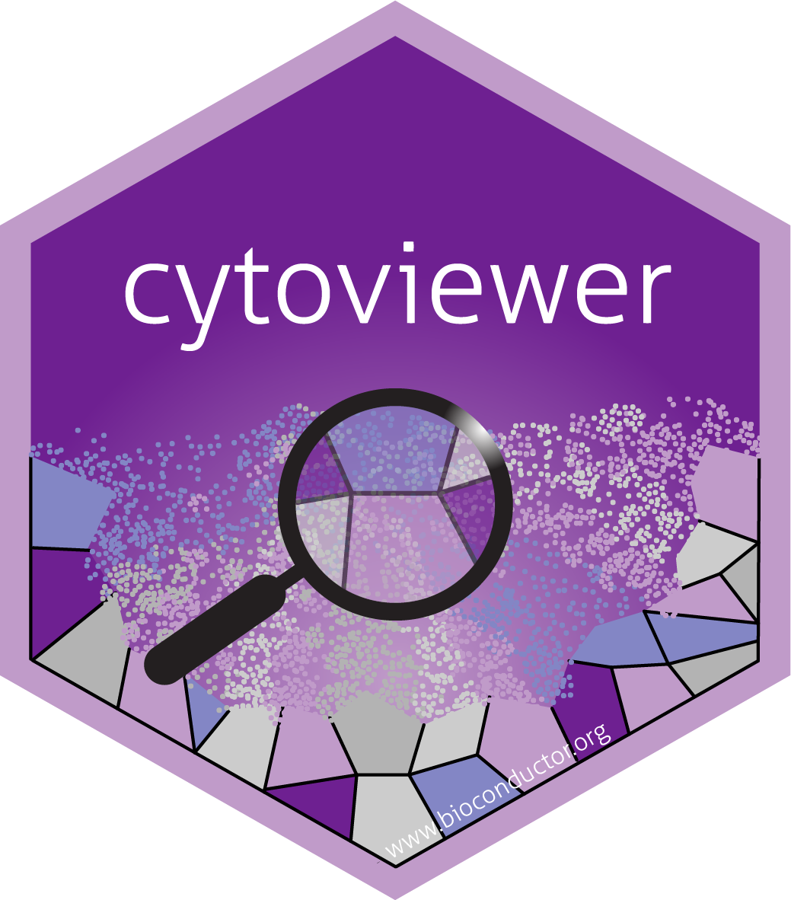

cytoviewer - Interactive multi-channel image visualization in R
Lasse Meyer
Department for Quantitative Biomedicine, University of ZurichInstitute for Molecular Health Sciences, ETH Zurichlasse.meyer@dqbm.uzh.ch
Nils Eling
Department for Quantitative Biomedicine, University of ZurichInstitute for Molecular Health Sciences, ETH Zurichnils.eling@dqbm.uzh.ch
19 October 2023
Source:vignettes/cytoviewer.Rmd
cytoviewer.RmdAbstract
This R/Bioconductor package supports interactive visualization of multi-channel images and segmentation masks generated by imaging mass cytometry and other highly multiplexed imaging techniques using shiny. The cytoviewer interface is divided into image-level (Composite and Channels) and cell-level visualization (Masks). It allows users to overlay individual images with segmentation masks, integrates well with SingleCellExperiment and SpatialExperiment objects for metadata visualization and supports image downloads.

Introduction
This vignette introduces the cytoviewer package for
interactive multi-channel image visualization. Images as well as
corresponding segmentation masks generated by imaging mass cytometry
(IMC) and other highly multiplexed imaging techniques can be
interactively visualized and explored.
The cytoviewer package builds on top of the cytomapper
Bioconductor package (Eling et al. 2020)
and extends the static visualization strategies provided by
cytomapper via an interactive Shiny
application. The cytoviewer package leverages the
image handling, analysis and visualization strategies provided by the
EBImage
Bioconductor package and offers interactive image visualization
strategies in a similar fashion as iSEE for
single-cell data. In addition, building up on SingleCellExperiment,
SpatialExperiment
and cytomapper::CytoImageList classes, the
cytoviewer package integrates into the Bioconductor
framework for single-cell and image analysis.
Read the pre-print here.
Highly multiplexed imaging
Highly multiplexed imaging allows simultaneous spatially and single-cell resolved detection of dozens of biological molecules (e.g. proteins) in their native tissue context. As a result, these technologies allow an in-depth analysis of complex systems and diseases such as the tumor microenvironment (Jackson et al. 2020) and type 1 diabetes progression (Damond et al. 2019).
Imaging-based spatial proteomics methods (Moffitt, Lundberg, and Heyn 2022) can be broadly divided into fluorescent cyclic approaches such as tissue-based cyclic immunofluorescence (t-CyCIF) (Lin et al. 2018) and one-step mass-tag based approaches such as multiplexed ion beam imaging (MIBI) (Angelo et al. 2014) and IMC (Giesen et al. 2014).
Of note, the instructions below will focus on the visualization and
exploration of IMC data as an example. However, data
from other technologies such as t-CyCIF or MIBI, which produce
pixel-level intensities and (optionally) segmentation masks, can be
interactively visualized with cytoviewer as long as they
have the appropriate input format (see Section Data input format).
Imaging mass cytometry
IMC, an advancement of CyTOF, combines antibodies tagged with isotopically pure rare earth metals with laser ablation and mass-spectrometry-based detection to produce high-dimensional images (Giesen et al. 2014). It captures the spatial expression of over 40 proteins in parallel at a sub-cellular resolution of 1 μm. Thus, IMC is able to detect cytoplasmic and nuclear localization of proteins.
Highly multiplexed image analysis
To fully leverage the information contained in IMC and multiplexed imaging data in general, computational tools are of key importance.
The main analysis steps, irrespective of the biological question, include 1) Visual inspection of images for quality control, 2) Image pre-processing and segmentation and 3) Single-cell and spatial analysis (Windhager, Bodenmiller, and Eling 2021).
A comprehensive end-to-end workflow for multiplexed image processing and analysis with detailed information for every analysis step can be found here.
Importantly, the cytoviewer package can support,
simplify and improve any of these analysis steps with its easy-to-use
interactive visualization interface in R.
Below we will showcase an example
workflow that highlights the different functionality and potential
application fields of cytoviewer.
Application overview
The cytoviewer interface is broadly divided into image-level (Composite and Channels) and cell-level visualization (Masks). It allows users
to overlay individual images with segmentation masks, integrates well
with SingleCellExperiment and
SpatialExperiment objects for metadata visualization and
supports image downloads (Figure
2B).

Figure 1: cytoviewer interface and functionality. (A) The supported functionality (right) of cytoviewer depends on the data inputs (left). To match information between the objects, cell (cell_id) and image (img_id) identifiers can be provided. SCE/SPE = SingleCellExperiment/SpatialExperiment. (B) The graphical user interface of cytoviewer is divided into a body, header, and sidebar. The body of cytoviewer includes the image viewer, which has three tabs: Composite (Image-level), Channels (Image-level), and Mask (Cell-level). Zooming is supported for Composite and Mask tabs. The package version, R session information, help page, and a drop-down menu for image downloads are located in the header. The sidebar menu has controls for sample selection, image visualization, mask visualization, and general settings. Scale bar: 150 µm (C) cytoviewer supports different viewing modes. Top: The “channels” tab of image-level visualization displays individual channels. Shown are Ecad (magenta), CD8a (cyan), and CD68 (yellow) marking tumor cells, CD8+ T cells, and myeloid cells, respectively. Center: The “composite” tab of image-level visualization visualizes image composites combining multiple channels. These composite images can be overlayed with cell outlines, which can be colored by cell-specific metadata. Shown here are cell outlines colored by cell area (continous value) and cell type (categorical value; tumor cells in white). Channel color settings are as follows for all markers: Contrast: 2,5; Brightness: 1; Gamma: 1.2. Bottom: The “mask” tab can be used to visualize segmentation masks that can be colored by cell-specific metadata. Shown here are segmentation masks colored by cell area (continuous) and cell type (categorical; tumor cells in magenta). Scale bars: 150 µm. (D) “Image appearance” controls can be used to add legends or titles and to change the scale bar length for image-level (top) and cell level (bottom) visualization. The cell-level mask plot depicts tumor (magenta), myeloid (yellow), and CD8+ T cells (cyan). Scale bars: 100 µm. Adapted from (Meyer, Eling, and Bodenmiller 2023)
Data input format
The cytoviewer package combines objects of SingleCellExperiment,
SpatialExperiment
and cytomapper::CytoImageList classes (from cytomapper)
to visualize image- and cell-level information.
The cytoviewer function takes up to five
arguments.
Firstly, image refers to a CytoImageList
object containing one or multiple multi-channel images where each
channel represents the pixel-intensities of one marker (proteins in
IMC).
Secondly, mask refers to a CytoImageList
object containing one or multiple segmentation masks. Segmentation masks
are defined as one-channel images containing integer values, which
represent the cell ids or background.
Thirdly, the object entry refers to a
SingleCellExperiment or SpatialExperiment
class object that contains cell-specific metadata in the
colData slot.
Lastly, to match information between the CytoImageList
objects and the
SingleCellExperiment/SpatialExperiment object,
two additional spots can be specified:
img_id: a single character indicating thecolData(of theSingleCellExperiment/SpatialExperimentobject) andelementMetadata(of theCytoImageListobject) entry that contains the image identifiers. These image ids have to match between theSingleCellExperiment/SpatialExperimentobject and theCytoImageListobjects.cell_id: a single character indicating thecolDataentry that contains the cell identifiers. These should be integer values corresponding to pixel-values in the segmentation masks.
For more detailed information on the input objects, please refer to the respective documentation (e.g. the vignettes of the cytomapper or SingleCellExperiment/ SpatialExperiment packages).
In the Read in data section, we provide
example code to directly read in images and masks (e.g. in .tiff format)
into a CytoImageList object and create a
SingleCellExperiment object from them, which we can then
visualize with cytoviewer.
Data input variations
The functionality of cytoviewer depends on which input
objects are user-provided. Below we describe the four use
cases in respect to input objects and functionality.
1. Usage of cytoviewer with images, masks and object
The full functionality of cytoviewer can be leveraged when
image, mask and object are
provided, which is the main intended use case.
This allows image-level visualization (Composite and Channels), cell-level visualization, overlaying images with segmentation masks as well as metadata visualization.
2. Usage of cytoviewer with images only
If only the image object is specified, image-level visualization (Composite and
Channels) is possible.
3. Usage of cytoviewer with images and masks
Image-level visualization (Composite and
Channels), overlaying of images with segmentation masks and cell-level visualization is feasible when
image and mask objects are provided.
4. Usage of cytoviewer with masks and object
If mask and object are specified, cell-level visualization as well as metadata
visualization is possible.
Example workflow
Installation
The cytoviewer package can be installed from
Bioconductor via:
if (!requireNamespace("BiocManager", quietly = TRUE))
install.packages("BiocManager")
BiocManager::install("cytoviewer")The development version of cytoviewer can be installed
from Github via:
if (!requireNamespace("remotes", quietly = TRUE))
install.packages("remotes")
remotes::install_github("BodenmillerGroup/cytoviewer")To load the package in your R session, type the following:
Example dataset
For visualization purposes, we will use a toy dataset provided by the cytomapper package.
The dataset contains 3 images of \(100\mu{m}\) x \(100\mu{m}\) dimensions with 362 segmented cells and pixel-intensities for 5 proteins: H3, CD99, PIN, CD8a, and CDH. It is a small subset from a Type 1 Diabetes dataset (Damond et al. 2019).
Pixel-level intensities for all 5 markers (5 channels) are stored in
the pancreasImages object.
The corresponding segmentation masks are stored in the
pancreasMasks object.
All cell-specific metadata are stored in the colData
slot of the corresponding SingleCellExperiment object:
pancreasSCE.
For more detailed information on the dataset, please refer to the
respective documentation (e.g. via ?pancreasImages or the
vignette of the cytomapper
package).
We also provide example code to directly read in images and masks
(e.g. in .tiff format) into a CytoImageList object and
create a SingleCellExperiment object from them in the Read in data section.
# Load example datasets
library(cytomapper)
data("pancreasImages")
data("pancreasMasks")
data("pancreasSCE")
pancreasImages## CytoImageList containing 3 image(s)
## names(3): E34_imc G01_imc J02_imc
## Each image contains 5 channel(s)
## channelNames(5): H3 CD99 PIN CD8a CDH
pancreasMasks ## CytoImageList containing 3 image(s)
## names(3): E34_mask G01_mask J02_mask
## Each image contains 1 channel
pancreasSCE## class: SingleCellExperiment
## dim: 5 362
## metadata(0):
## assays(2): counts exprs
## rownames(5): H3 CD99 PIN CD8a CDH
## rowData names(4): MetalTag Target clean_Target frame
## colnames(362): E34_824 E34_835 ... J02_4190 J02_4209
## colData names(9): ImageName Pos_X ... MaskName Pattern
## reducedDimNames(0):
## mainExpName: NULL
## altExpNames(0):Function call
Here as an example, we call cytoviewer with
image, mask and object data to
leverage all provided functionality.
This setting allows image-level visualization (Composite and Channels), cell-level visualization, overlaying images with segmentation masks as well as metadata visualization.
For further details, please refer to the ?cytoviewer
manual or the Help page within the shiny application.
# Use cytoviewer with images, masks and object
app <- cytoviewer(image = pancreasImages,
mask = pancreasMasks,
object = pancreasSCE,
img_id = "ImageNb",
cell_id = "CellNb")
if (interactive()) {
shiny::runApp(app, launch.browser = TRUE)
}Interface
The cytoviewer interface is divided into a
Header, Sidebar and
Body section (see Figure below).
The Header includes package version information, access to session information and the help page as well as a dropdown-menu for image downloads.
The Body features a Tabset-Panel layout allowing the user to switch between three image modes: Image-level (Composite and Channels) and Cell-level (Mask). Furthermore, the Composite and Mask tabs have zoom controls.
The Sidebar panel is subdivided into four sections: Sample selection, Image-level, Cell-level and General controls.
Image-level visualization
Image visualization control is split into basic and advanced controls.
Basic controls supports the selection of up to six
markers/channels for image display. Each marker has color
control settings that allow the user to set contrast, brightness, gamma
and select a channel color.
Figure 2: Image-level visualization - Basic controls. The graphical user interface of cytoviewer for image-level-composite with basic controls. For image-level visualization, Ecad (magenta), CD8a (cyan) and CD68 (yellow) marking tumor cells, CD8+ T cells and myeloid cells, respectively, are shown and channel color settings are as follows for all markers: Contrast: 2,5; Brightness: 1; Gamma: 1.2. Note that the Composite tab is zoomable. Scale bars: 150 µm. Adapted from (Meyer, Eling, and Bodenmiller 2023)
In the advanced controls part, the user can choose to
overlay the displayed images with provided segmentation
masks. Outline color and mask thickness can be adjusted by
the user. Moreover, the masks can be outlined by cell-specific metadata
provided in colData slot of the object.
Of note, for categorical and continuous metadata entries the user can choose between discrete colors and continuous color palettes (viridis, inferno, plasma), respectively.
Figure 3: Image-level visualization - Advanced controls. The graphical user interface of cytoviewer for image-level-composite with advanced controls. For image-level visualization, Ecad (magenta), CD8a (cyan) and CD68 (yellow) marking tumor cells, CD8+ T cells and myeloid cells, respectively, are shown and channel color settings are as follows for all markers: Contrast: 2,5; Brightness: 1; Gamma: 1.2. Note that the Composite tab is zoomable. Scale bars: 150 µm. Adapted from (Meyer, Eling, and Bodenmiller 2023)
Cell-level visualization
Cell visualization has basic controls.
Here, the user can choose to display the provided segmentation
masks. If an object is provided, the masks can
be colored by cell-specific metadata.
Please note again that for categorical and continuous metadata entries the user can choose between discrete colors and continuous color palettes (viridis, inferno, plasma), respectively.
Figure 4: Cell-level visualization - Basic controls. The graphical user interface of cytoviewer for cell-level-mask with basic controls. For cell-level visualization, tumor cells (magenta) are highlighted. Note that the Mask tab is zoomable. Adapted from (Meyer, Eling, and Bodenmiller 2023)
General controls
General controls is subdivided into an Image appearance and Image filters part.
In the Image appearance section, the user can adjust the scale bar length and include legend/image titles, while the Image filters section allows to control pixel-wise interpolation (default) and apply a Gaussian filter.
Image download
The cytoviewer package supports fast and uncomplicated
image downloads.
Download controls are part of the Header (see Section Interface).
The user can specify a file name, select the image of interest (Composite, Channels, Mask) and the file format (pdf, png). Upon clicking the download button, a pop-window should appear where the user can specify the download location.
Additional Information
Read in data
To conveniently read in images and segmentation masks into a
CytoImageList object and then visualize these using
cytoviewer, the cytomapper package provides
the loadImages function.
The loadImages function returns a
CytoImageList object containing the multi-channel images or
segmentation masks. Refer to the ?loadImages function to
see the full functionality.
As an example, we will read in multi-channel images and segmentation
masks provided by the cytomapper package.
To correctly scale pixel values of the segmentation masks when
reading them in, we will need to set as.is = TRUE. Users
needs to take care that pixel values are scaled correctly in more
complex cases.
library(cytomapper)
# Data directory that stores images and masks in tiff format
data_path <- system.file("extdata", package = "cytomapper")
# Read in images
cur_images <- loadImages(data_path, pattern = "_imc.tiff")
cur_images## CytoImageList containing 3 image(s)
## names(3): E34_imc G01_imc J02_imc
## Each image contains 5 channel(s)
# Read in masks
cur_masks <- loadImages(data_path, pattern = "_mask.tiff", as.is = TRUE)
cur_masks## CytoImageList containing 3 image(s)
## names(3): E34_mask G01_mask J02_mask
## Each image contains 1 channelAdd metadata
To link images between the two CytoImageList objects and
the corresponding SingleCellExperiment object, the image
ids need to be added to the elementMetadata slot of the
CytoImageList objects.
names(cur_images)## [1] "E34_imc" "G01_imc" "J02_imc"
names(cur_masks)## [1] "E34_mask" "G01_mask" "J02_mask"
mcols(cur_masks)$ImageNb <- mcols(cur_images)$ImageNb <- c("E34", "G01", "J02")Add channel names
To access the correct images in the multi-channel
CytoImageList object, the user needs to set the correct
channel names. For this, the cytomapper package provides
the ?channelNames getter and setter function:
channelNames(cur_images) <- c("H3", "CD99", "PIN", "CD8a", "CDH")Generating the object
Based on the processed segmentation masks and multi-channel images,
cytomapper can be used to measure cell-specific intensities
and morphological features. Here, these features are stored in form of a
SingleCellExperiment object.
cur_sce <- measureObjects(image = cur_images,
mask = cur_masks,
img_id = "ImageNb")
cur_sce## class: SingleCellExperiment
## dim: 5 362
## metadata(0):
## assays(1): counts
## rownames(5): H3 CD99 PIN CD8a CDH
## rowData names(0):
## colnames: NULL
## colData names(8): ImageNb object_id ... m.majoraxis m.eccentricity
## reducedDimNames(0):
## mainExpName: NULL
## altExpNames(0):Run cytoviewer
Next, we can again call cytoviewer with the generated
image, mask and object data and
leverage all provided functionality.
# Use cytoviewer with images, masks and object
app_1 <- cytoviewer(image = cur_images,
mask = cur_masks,
object = cur_sce,
img_id = "ImageNb",
cell_id = "object_id")
if (interactive()) {
shiny::runApp(app_1, launch.browser = TRUE)
}For more detailed information on the input objects, please refer to the respective documentation (the vignettes of the cytomapper or SingleCellExperiment/ SpatialExperiment packages).
Session info
## R version 4.3.1 (2023-06-16)
## Platform: x86_64-apple-darwin20 (64-bit)
## Running under: macOS Monterey 12.6.9
##
## Matrix products: default
## BLAS: /Library/Frameworks/R.framework/Versions/4.3-x86_64/Resources/lib/libRblas.0.dylib
## LAPACK: /Library/Frameworks/R.framework/Versions/4.3-x86_64/Resources/lib/libRlapack.dylib; LAPACK version 3.11.0
##
## locale:
## [1] en_US.UTF-8/en_US.UTF-8/en_US.UTF-8/C/en_US.UTF-8/en_US.UTF-8
##
## time zone: UTC
## tzcode source: internal
##
## attached base packages:
## [1] stats4 stats graphics grDevices utils datasets methods
## [8] base
##
## other attached packages:
## [1] cytomapper_1.12.0 SingleCellExperiment_1.22.0
## [3] SummarizedExperiment_1.30.2 Biobase_2.60.0
## [5] GenomicRanges_1.52.1 GenomeInfoDb_1.36.4
## [7] IRanges_2.34.1 S4Vectors_0.38.2
## [9] BiocGenerics_0.46.0 MatrixGenerics_1.12.3
## [11] matrixStats_1.0.0 EBImage_4.42.0
## [13] cytoviewer_1.1.3 BiocStyle_2.28.1
##
## loaded via a namespace (and not attached):
## [1] bitops_1.0-7 gridExtra_2.3
## [3] rlang_1.1.1 magrittr_2.0.3
## [5] svgPanZoom_0.3.4 shinydashboard_0.7.2
## [7] compiler_4.3.1 DelayedMatrixStats_1.22.6
## [9] png_0.1-8 systemfonts_1.0.5
## [11] fftwtools_0.9-11 vctrs_0.6.4
## [13] stringr_1.5.0 pkgconfig_2.0.3
## [15] SpatialExperiment_1.10.0 crayon_1.5.2
## [17] fastmap_1.1.1 magick_2.8.0
## [19] XVector_0.40.0 ellipsis_0.3.2
## [21] scuttle_1.10.3 fontawesome_0.5.2
## [23] utf8_1.2.3 promises_1.2.1
## [25] rmarkdown_2.25 ggbeeswarm_0.7.2
## [27] ragg_1.2.6 purrr_1.0.2
## [29] xfun_0.40 beachmat_2.16.0
## [31] zlibbioc_1.46.0 cachem_1.0.8
## [33] jsonlite_1.8.7 later_1.3.1
## [35] rhdf5filters_1.12.1 DelayedArray_0.26.7
## [37] Rhdf5lib_1.22.1 BiocParallel_1.34.2
## [39] terra_1.7-55 jpeg_0.1-10
## [41] tiff_0.1-11 parallel_4.3.1
## [43] R6_2.5.1 bslib_0.5.1
## [45] stringi_1.7.12 RColorBrewer_1.1-3
## [47] limma_3.56.2 jquerylib_0.1.4
## [49] Rcpp_1.0.11 bookdown_0.36
## [51] knitr_1.44 R.utils_2.12.2
## [53] nnls_1.5 httpuv_1.6.11
## [55] Matrix_1.5-4.1 tidyselect_1.2.0
## [57] viridis_0.6.4 abind_1.4-5
## [59] yaml_2.3.7 codetools_0.2-19
## [61] miniUI_0.1.1.1 lattice_0.21-8
## [63] tibble_3.2.1 shiny_1.7.5.1
## [65] evaluate_0.22 archive_1.1.6
## [67] desc_1.4.2 shinycssloaders_1.0.0
## [69] pillar_1.9.0 BiocManager_1.30.22
## [71] generics_0.1.3 sp_2.1-1
## [73] rprojroot_2.0.3 RCurl_1.98-1.12
## [75] ggplot2_3.4.4 sparseMatrixStats_1.12.2
## [77] munsell_0.5.0 scales_1.2.1
## [79] xtable_1.8-4 glue_1.6.2
## [81] tools_4.3.1 colourpicker_1.3.0
## [83] locfit_1.5-9.8 fs_1.6.3
## [85] rhdf5_2.44.0 grid_4.3.1
## [87] edgeR_3.42.4 DropletUtils_1.20.0
## [89] colorspace_2.1-0 GenomeInfoDbData_1.2.10
## [91] raster_3.6-26 beeswarm_0.4.0
## [93] HDF5Array_1.28.1 vipor_0.4.5
## [95] cli_3.6.1 textshaping_0.3.7
## [97] fansi_1.0.5 viridisLite_0.4.2
## [99] S4Arrays_1.0.6 svglite_2.1.2
## [101] dplyr_1.1.3 gtable_0.3.4
## [103] R.methodsS3_1.8.2 sass_0.4.7
## [105] digest_0.6.33 dqrng_0.3.1
## [107] rjson_0.2.21 htmlwidgets_1.6.2
## [109] R.oo_1.25.0 memoise_2.0.1
## [111] htmltools_0.5.6.1 pkgdown_2.0.7
## [113] lifecycle_1.0.3 mime_0.12